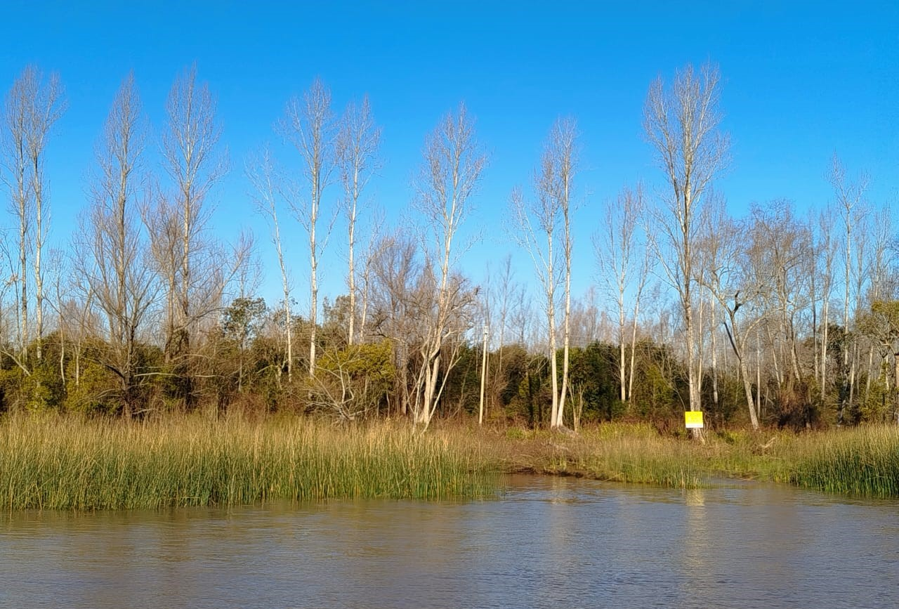
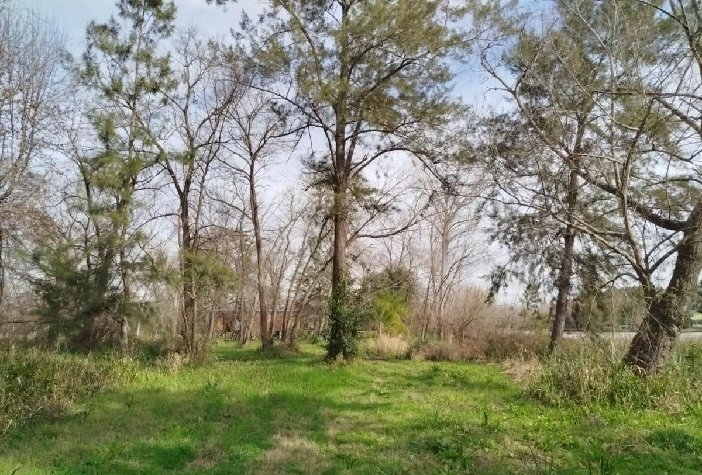

Costa propia
Fracciones con frente al Canal de la Serna de 50 a 100 m de costa, con amplios espacios para playas y esparcimiento.
Lotes con costa propia en el Delta
Fracciones amplias sobre el agua, con verde, privacidad y espacio real para proyectar.
Lotes de 1 a 1,7 hectáreas, con 50 a 100 metros de costa, títulos perfectos y posibilidad de financiación.
Fracciones con frente al Canal de la Serna de 50 a 100 m de costa, con amplios espacios para playas y esparcimiento.
Lotes de 1 a 1,7 hectáreas, ideales para desarrollo, con amplitud para mantener privacidad e independencia.
Arboleda, río, privacidad, aire libre y entorno característico del Delta.
Terrenos para construir una casa de descanso, un refugio familiar o una inversión en tierra.
Espacio, verde y río para proyectar
Estos lotes combinan amplitud, costa y entorno natural en una ubicación privilegiada del Delta. Son ideales para quienes buscan construir una casa de descanso, desarrollar un refugio familiar o invertir en tierra con potencial sobre el río.
Consultar disponibilidad
Fracciones amplias con costa
Terrenos sobre el Canal de la Serna, con vegetación, escala generosa y potencial constructivo. La información exacta de disponibilidad se confirma por consulta.

Terrenos amplios sobre el Canal de la Serna, pensados para desarrollar una casa de descanso, un proyecto familiar o una inversión de largo plazo.
Consultar por estos lotesCOSTAS AMPLIAS PARA PROYECTAR Y DISFRUTAR
Mucho más que un lote para disfrutar: la posibilidad de integrarse a una isla actualmente en producción, participar opcionalmente en proyectos que generen valor y huertas agroecológicas. En paralelo, acceso a infraestructura y servicios de apoyo para desarrollar iniciativas dentro de los lotes propios.
La ubicación de los lotes dentro de una isla con actividad productiva ofrece a los compradores la posibilidad de vincularse, bajo acuerdos específicos, con los proyectos que se desarrollen en el interior del campo, así como acceder a infraestructura, maquinaria y servicios de apoyo para iniciativas productivas propias.
Se ofrece a los compradores servicios de construcción de playa, muelle y cabaña.
Plano y medidas
El detalle de cada lote muestra la superficie total y los metros de costa sobre el Canal de la Serna. Las medidas y disponibilidad se confirman por consulta.
Lote especial con cabaña
Además de los lotes para desarrollar, se puede consultar por un lote con una cabaña existente, lista para usar e integrada al paisaje. Cuenta con 3 ambientes, 2 dormitorios, living comedor con cocina integrada, capacidad ideal para 4 personas, deck amplio y muelle.
Consultar por lotes/cabañaGalería
Las imágenes principales muestran los lotes disponibles sobre el Canal de la Serna. Al final se incluyen referencias del lote con cabaña.
Acceso náutico y privacidad
Los lotes se encuentran en zona de islas de San Fernando, sobre el Canal de la Serna. La ubicación combina privacidad, vegetación, costa propia y acceso náutico, manteniendo una conexión razonable con Tigre, San Fernando y la zona norte del Gran Buenos Aires.
Para coordinar una visita o recibir indicaciones precisas, contactanos por WhatsApp.
Contacto
Escribinos por WhatsApp para recibir más información, coordinar una visita o consultar por el lote con cabaña.